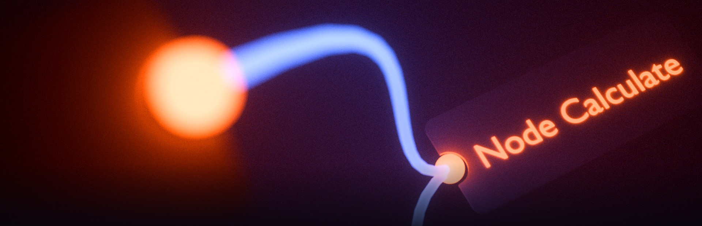

Сохраните текущее рабочее пространство (все листы, ноды и связи) как стартовое - оно будет открываться автоматически при каждом запуске приложения вместо примера по умолчанию.
Показать окно приветствия сейчас и снова включить его показ при следующих запусках (если ранее отключили галочкой "Не показывать при следующем запуске").
Пока хранится в папке программы - при переустановке приложения потребуется сохранить заново. Перенос в пользовательский профиль (переживёт переустановку) - в планах.

NodeCalculate © 2024 NodeCalculate Team, Pavel Fomin - лицензия MIT.
Построено на Electron (© OpenJS Foundation) - лицензия MIT.
Импорт/экспорт Excel, чтение/запись .xlsx - собственная реализация проекта, без сторонних библиотек.